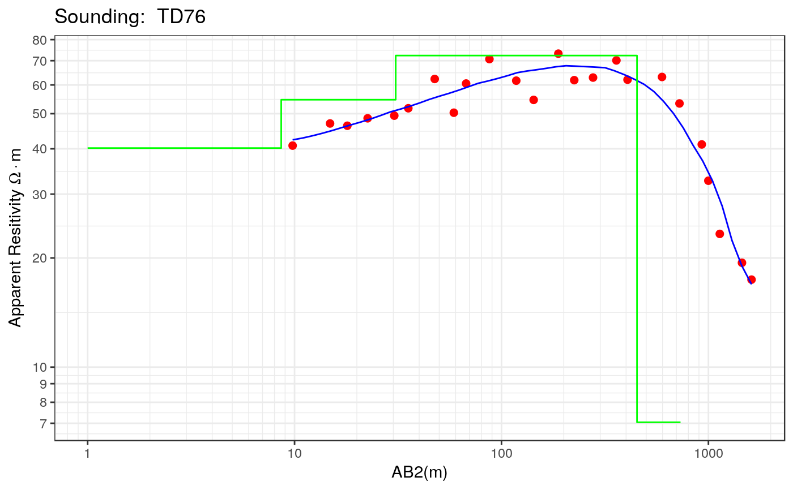

calibrate_nls
calibrate_nls.RdFunction to estimate the real resistivities and thicknesses using the nonlinear least-squares approach proposed by Roy(1999).
calibrate_nls(ves, par0, iterations = 30, ireport = 10)
Arguments
| ves | A ves object |
|---|---|
| par0 | A numeric vector with the values of the layer resistivities and thicknesses |
| iterations | Number of iterations |
| ireport | Number of iterations to report results on the console |
Value
A list with the following entries:
par: A numeric vector with the values of the layer resistivities and thicknesses
value: The value or the RSS (Residual sum of squares)
rel.error: The value of the relative error (in percentage)
cal.error: A matrix with the RSS and relative error at each iteration
residual: A vector with the residuals (original scale)
var.residual: The variance of the residuals (log transformed scale)
hessian: First order approximation of the Hessian matrix. This is calculated using the Jacobian matrix.
cov.matrix: Covariance matrix of the estimated parameters calculated as the inverse of the hessian matrix.
corr.matrix: Correlation matrix of the estimated parameters.
References
Roy, I. An efficient non-linear least-squares 1D inversion scheme for resistivity and IP sounding data. 1999. Geophysical Prospecting, 47, 4, 527-550.
See also
Other calibration functions: calibrate_ilsqp,
calibrate_joint_nls,
calibrate_seq_joint_nls,
calibrate_step_nls,
calibrate_step,
calibrate_svd, calibrate,
log_mnad_resistivity,
log_mxad_resistivity,
log_rss_resistivity,
mnad_resistivity,
mxad_resistivity,
relative_error_resitivity,
rss_resistivity
Examples
# Example 1 data(ves_data1) ab2 <- ves_data1$ab2 apprho <- ves_data1$apprho sev1a <- ves(id= "VES1", ab2 = ab2, apprho = apprho) # Let's fit a four layer model rho <- c(40, 70, 30, 20) thick <- c(2, 10, 50, 500) par0 <- c(rho, thick) res.nls1 <- calibrate_nls(sev1a, par0, iterations = 30, ireport = 5)#> iteration, RSS, Rel Error = 0 0.0026274 3.394969 #> iteration, RSS, Rel Error = 5 0.000757266 1.782435 #> iteration, RSS, Rel Error = 10 0.000557687 1.547716 #> iteration, RSS, Rel Error = 15 0.0005190975 1.513008 #> iteration, RSS, Rel Error = 20 0.0005036183 1.498741 #> iteration, RSS, Rel Error = 25 0.0004935954 1.48755 #> iteration, RSS, Rel Error = 29 0.0004873611 1.479721sev1a$rhopar <- res.nls1$rho sev1a$thickpar <- res.nls1$thickness sev1a$interpreted <- TRUE plot(sev1a, type = "ves")# Example 2 data(ves_data2) ab2 <- ves_data2$ab2 apprho <- ves_data2$apprho sev2a <- ves(id = "TD76", ab2 = ab2, apprho = apprho) rho <- c(20, 50, 100, 10) thick <- c(10, 20, 500, 100) par0 <- c(rho, thick) res.nls2 <- calibrate_nls(sev2a, par0, iterations = 30, ireport = 5)#> iteration, RSS, Rel Error = 0 0.01825262 8.73894 #> iteration, RSS, Rel Error = 5 0.001753651 2.543372 #> iteration, RSS, Rel Error = 10 0.001706588 2.517702 #> iteration, RSS, Rel Error = 15 0.001693322 2.514937 #> Final step 19 , Error= 2.51471sev2a$rhopar <- res.nls2$rho sev2a$thickpar <- res.nls2$thickness sev2a$interpreted <- TRUE plot(sev2a, type = "ves")